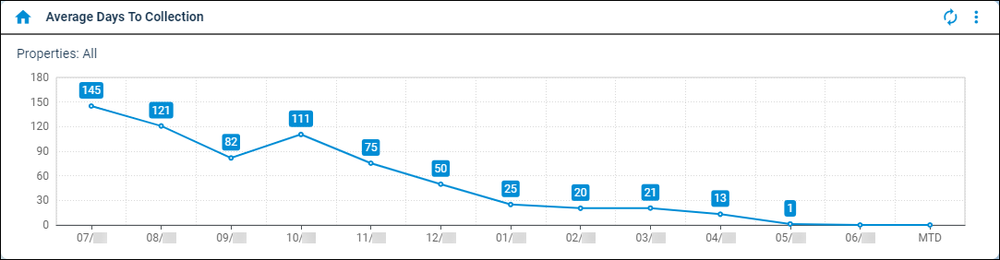

Source: https://rmxhelp.rentmanager.com/Topics/Express/Other/Dashboard-Tiles/Average-Days-to-Collection.htm
Average Days to Collection (Dashboard Tile)
The Average Days To Collection dashboard tile calculates the average number of days it takes tenants to pay open charges on their accounts. Each row displays information from one month or year of your selected time period. Rent Manager counts the total number of charges posted for specific charge types dated within your selected time period that have been fully paid. It then calculates the number of days between the charge dates and the dates of the payments that fully paid them. Finally, Rent Manager averages those days and reports the result in each column.
More Information
While counting, the Average Days To Collection dashboard tile considers the charge date as the first day, and all days until the day the charge is paid in full are counted. Prepayments that fully pay off a charge are counted as zero days for the month in which the charge is dated. Charges paid fully by credits or charges whose final installments are made with a credit are not considered in the calculation.
The information on this dashboard tile may be represented in a graph or a list.
Related Privileges
| Group | Privilege | Column |
|---|---|---|
| Setup | Edit own dashboards | Enabled |
For more information, refer to Control User Access.

Filter Information
Related Privileges
| Group | Privilege | Column |
|---|---|---|
| Setup | Edit dashboard data filters | Enabled |
For more information, refer to Control User Access.
To filter the information that displays in the dashboard tile, click  arrow_forward Settings to open the Average Days To Collection Data Filters pop-up. The available filter options are listed below.
arrow_forward Settings to open the Average Days To Collection Data Filters pop-up. The available filter options are listed below.
| Option | Description | |||||
|---|---|---|---|---|---|---|
|
Property Filter |
Each property whose averages are included in the tile results. To include all current and future properties, select <All Properties>. Alternatively, select a property Group from the drop-down list. If <All Properties> is selected, you can also check Include inactive if 'All Properties' selected to calculate averages for all current and future properties whether they are active or inactive. More Information This field populates only with the properties to which you have access. Your access to properties can be managed from your user account or on the property's details page. For more information, refer to Limit Access to a Property. |
|||||
|
Charge Type |
The charge type(s) with unpaid transactions to include in the tile results. To select all current and future charge types, check *** All. |
|||||
|
Period(s) |
The number of months or years (as defined by the Period Category) to include in the tile results. |
|||||
|
Period Category |
The unit of time to use for the tile results (Month(s) or Year(s)). |
|||||
|
Graph Type |
The desired display option. |
|||||
|
||||||
|
Show Values |
If checked, rounded averages display above the dates along the bottom of either the Line or Bar graphs. |
|||||
|
Ignore dashboard property filter |
If checked, override the property filter configured on the Dashboard. |
Axis Descriptions
The information that displays on each axis in the graph is described below.
| Axis | Description |
|---|---|
|
X |
The month being examined, displayed in a MM/YY format (e.g., 01/26). |
|
Y |
The average number of days it takes tenants to pay open charges as of the specified month or year. |
Column Descriptions
The information that displays on the tile is organized into the following columns.
| Column | Description |
|---|---|
|
Date |
The month being examined, displayed in a MM/YY format (e.g., 01/26). |
|
Average Number of Days |
The average number of days it takes tenants to pay open charges as of the specified month or year. |